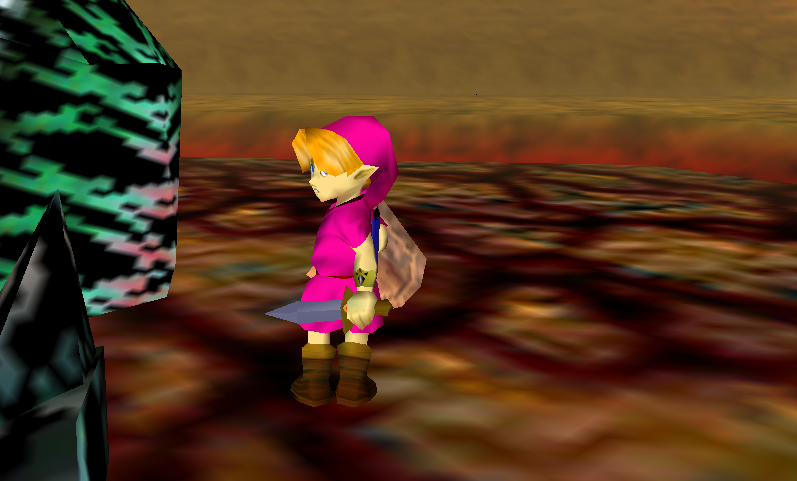
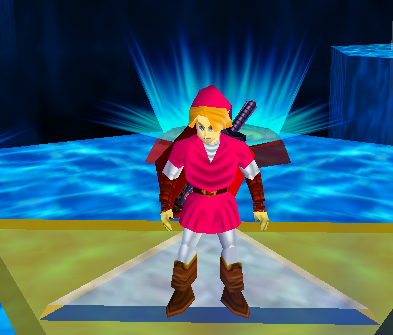
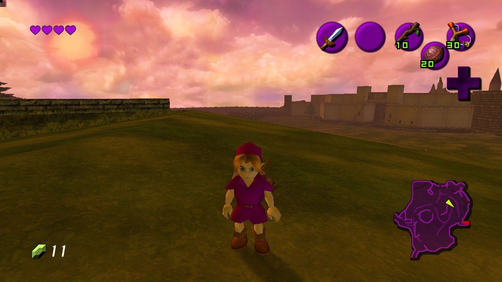
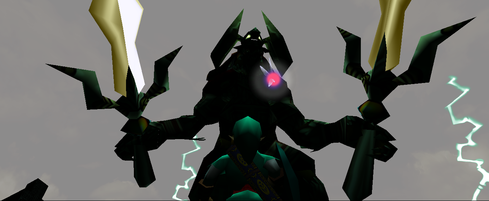
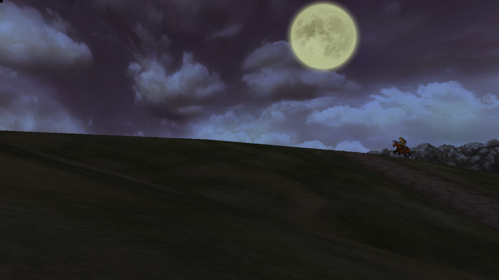

now | blog | wiki | recipes | bookmarks | contact | about | donate
* * * back home * * *
revisiting Zelda: Ocarina of Time at 120fps
2026-04-17
Over the last few days, I have been experimenting with the Ship of Harkinian projects, which are native source ports for PC made from decompilations of the Legend of Zelda games for Nintendo 64.


I set up Ship of Harkinian, which is Ocarina of Time with a load of extra things. For example, right now, I have Link's tunic and parts of the HUD changing colors using a rainbow effect. You can even fly up by holding down the left shoulder button if you have the right cheat turned on, give yourself infinite health, all that good stuff. I haven't been messing around with cheats much, because there is something else that has been interesting me: the Boss Rush challenge.
In games like Metroid Dread and several other games over the last few years, I have enjoyed doing boss rush challenges, which is typically where you rush against every boss in the game as fast as you can, either in order or out of order, depending on the game. I think it is a lot of fun to see how fast we can get through all of the bosses after we beat a game and have a good idea of how every boss works, and I've been playing Ocarina of Time since I was a kid, so why not?
I have seen this when it comes to source ports such as this project, the relevant project for Super Mario 64, all that good stuff. You'll eventually be telling someone about it or sharing something about it, and someone will say "So? You can already play these old games on an emulator!" There are so many reasons why these source ports are so much better than emulating these games.
First off, the performance. I have been messing around in the settings for Ship of Harkinian since I've been playing it, and I realized I had never seen Ocarina of Time beyond the original framerate on the Nintendo 64 and Gamecube (for Master Quest), which was 20fps. I played for a second with the original setting, and then I bumped it up to 120fps, and my god, the game flies and performs amazingly. Going through Boss Rush at such a high framerate really changes how everything feels during combat especially.
Also, the graphics look much better. Being native ports, these games can now take advantage of things like 4k resolution, enhanced lightning, and HD texture packs. I'm not saying it's Breath of the Wild-style graphics, but man, it just looks good, especially on a high-res monitor. You gotta play it on your own screen sometime to know what I mean.
Speaking of the graphics, let's talk about the mods for just a second. I have only been using one, but it is an amazing one. It is called OOT Reloaded and it really makes the game look so much sharper, so many of the assets have a brand new look to them and it is going to make playing all the way through a fresh experience. You can get an idea of what the mod I'm running looks like by checking out the screenshots on this page.
I am planning on playing the game in full sometime soon on stream and see how it feels to go through the whole adventure with these 'modern' feels to it. I am really looking forward to that!


Something else I've heard a lot of is just what point is of going back through and replaying these games again, such as Ocarina of Time, "Haven't you played it a thousand times already?"
Indeed I have! And I will probably play it a thousand more before I shuffle off this ol' mortal coil, because it is a timeless classic and I love revisiting it every now and again. Now, with the Ship of Harkinian project, it is easier than ever to get replay value out of it thanks to things like the randomizer feature. Or, you can test your mettle against a gauntlet of the games's bosses in Boss Rush. Or of course, you can go through the standard game story, and change things and tweak things around to your heart's content, because, well, you can!
These things are all just about having fun and exploring. How cool it is to run across Hyrule Field in 120fps! We can tweak the graphics, we can change how Link's outfits look, and all kinds of other things. There is no need for that long-rumored Ocarina of Time remake from Nintendo, because we have this project to enjoy already, right on our desktop machines!
Yes, I can already hear the thoughts of plenty of folks on the internet when they hear about a project like this: "But how is this legal?"
Well, the simple answer is that the Ship of Harkinian project is not shipping (lol) any of Nintendo's code or assets. When you first run the software on your own machine, you have to provide it with your own compatible ROM. The software then extracts the assets from the ROM and creates a brand new set of files - things like assets, textures, soundtrack, all that good stuff. It is then repacked in another format called OTR, which is basically a high-speed library that the PC port is able to read instantly.
As you can imagine, because you are the one providing the software with everything it needs to generate an OTR archive that it can then play, the original project is not shipping anything that violates any copyright: You play with it after you provide it your own ROM to extract data from, so since nothing is being distributed, there is nothing to legally go after.

There are a few other things I'm looking forward to trying out with this project, being the following:
I've been having fun having a go with the game so far, and will probably be updating the site sometime soon when I'm going to be doing a stream of the game. I love Ocarina of Time and Majora's Mask, and it has been awhile since I've done replays of either, so discovering these comes at a fun time! Check out the links below if you want to check them out and get them up and running on your own machine!